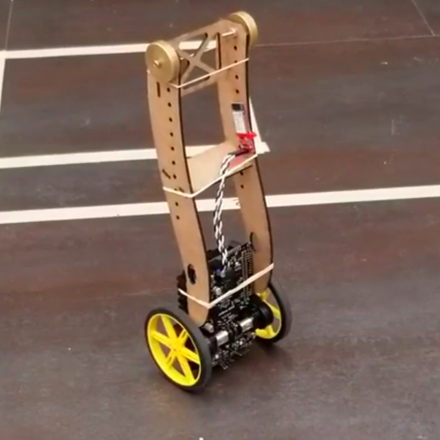

| This project was completed for my Quantitative Engineering Analysis course. In this module, pairs of students were required to derive and implement a controller to keep an inverted pendulum segway robot, named Rocky, upright. See image to the right. Additional challenges included tuning the controller to make the robot drive as fast as possible while remaining upright, as well as spin as fast as possible while remaining upright. The full report can be found above. To tackle this challenge, we first derived a block diagram for the physical system to illustrate and understand how it would interact with our various controllers. In the end, we implemented controllers for robot angle, position, and velocity, as well as motor speed. The final block diagram is shown below. |
 |

Using our block diagram, we calculated the transfer function for the entire system. We used Mathematica to find the poles of the transfer function, allowing us to quickly determine the long-term stability behavior of any set of controller constants by evaluating the signs and magnitudes of the real and imaginary components of the poles. Linked is a demo video of our robot “sprinting”. Camera work done by yours truly :)